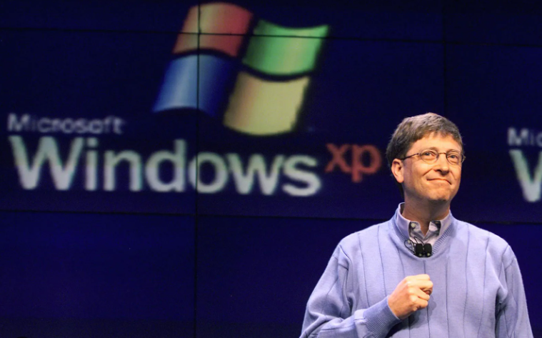
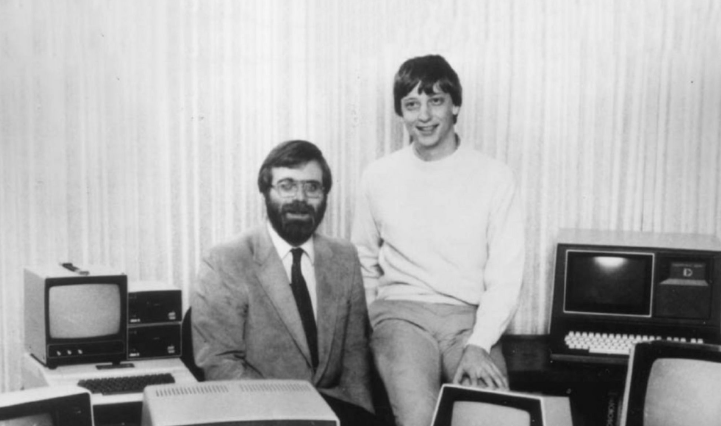
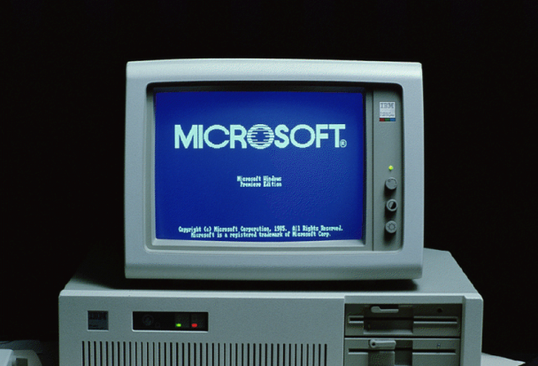

როგორ შეიქმნა microsoft?
1975 წელს ბილ გეიტსმა და პოლ გ. ალენმა, სიეტლის ბიჭობის ორმა მეგობარმა, გადააკეთეს BASIC, პოპულარული კომპიუტერის პროგრამირების ენა, ადრეულ პერსონალურ კომპიუტერზე (PC), Altair-ზე გამოსაყენებლად. ცოტა ხნის შემდეგ გეითსმა და ალენმა დააარსეს მაიკროსოფტი, სახელწოდება სიტყვებიდან მიკროკომპიუტერი და პროგრამული უზრუნველყოფა.
 1980 წელს Microsoft-მა დაამყარა პარტნიორობა IBM-თან Microsoft-ის ოპერაციული სისტემის IBM-ის კომპიუტერებთან შეკვრის მიზნით; ამ გარიგებით, IBM-მა Microsoft-ს გადაუხადა ჰონორარი ყოველი გაყიდვისთვის. 1985 წელს IBM-მა სთხოვა Microsoft-ს შეექმნა ახალი ოპერაციული სისტემა მათი კომპიუტერებისთვის სახელწოდებით OS/2. მაიკროსოფტმა გამოუშვა ეს ოპერაციული სისტემა, მაგრამ ასევე განაგრძო საკუთარი ალტერნატივის გაყიდვა, რომელიც პირდაპირ კონკურენციაში აღმოჩნდა OS/2-თან. Microsoft Windows-მა საბოლოოდ დაჩრდილა OS/2 გაყიდვების თვალსაზრისით. როდესაც მაიკროსოფტმა გამოუშვა Microsoft Windows-ის რამდენიმე ვერსია 1990-იან წლებში, მათ დაიპყრეს მსოფლიო პერსონალური კომპიუტერების ბაზრის წილი 90%. 2015 წლის 30 ივნისის მონაცემებით, Microsoft-ს აქვს გლობალური წლიური შემოსავალი 86,83 მილიარდი აშშ დოლარი (~ 109 მილიარდი აშშ დოლარი 2023 წელს) და 128,076 თანამშრომელი მთელ მსოფლიოში.[3] ის ავითარებს, აწარმოებს, ლიცენზირებს და მხარს უჭერს კომპიუტერული მოწყობილობების პროგრამული პროდუქტების ფართო სპექტრს.[4][5][6] 1975–1985: Microsoft-ის დაარსება Altair 8800 კომპიუტერი პოპულარული Model 33 ASR Teletype, როგორც ტერმინალი, ქაღალდის ლენტის წამკითხველი და ქაღალდის ლენტის პუნჩი. 1974 წლის ბოლოს, პოლ ალენი, პროგრამისტი Honeywell-ში, გადიოდა ჰარვარდის მოედანზე, როდესაც დაინახა Popular Electronics-ის 1975 წლის იანვრის ნომრის ყდა, რომელიც აჩვენა Altair 8800, პირველი მიკროკომპიუტერი.[7][8] ალენმა იყიდა ჟურნალი და სასწრაფოდ გაემართა ჰარვარდის კოლეჯის Currier House-ში, სადაც აჩვენა იგი საშუალო სკოლის მეგობარს ბილ გეიტსს.[8] მათ დაინახეს სისტემისთვის BASIC-ის იმპლემენტაციის განვითარების პოტენციალი.[9] გეითსმა მოუწოდა Altair-ის მწარმოებელს Micro Instrumentation and Telemetry Systems (MITS) და შესთავაზა განხორციელების დემონსტრირება. ალენსა და გეიტსს არც თარჯიმანი ჰყავდათ და არც Altair სისტემა, მაგრამ დემო პრეზენტაციამდე რვა კვირის განმავლობაში მათ მონტე დავიდოვის დახმარებით შექმნეს თარჯიმანი. როდესაც ალენი გაფრინდა ალბუკერკში MITS-თან შესახვედრად, თარჯიმანი მუშაობდა და MITS დათანხმდა Altair BASIC-ის გავრცელებას.[10][8] ალენი საცხოვრებლად ალბუკერკში გადავიდა, გეითსმა მალევე დატოვა ჰარვარდი, რათა შეუერთდეს მას და მათ იქ დააარსეს მაიკროსოფტი.[8] კომპანიის შემოსავალმა შეადგინა $16,005 1976 წლის ბოლოსთვის.
პირველი microsoft
